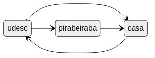
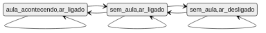

Checando propriedades com Lógica Temporal II
Slides1 Revisão & Cheatsheet
1.1 \(\square\) ou G: Globally, sempre
G \(\phi\): \(\phi\) deve ser verdadeiro por toda a execução a partir de agora.
G \(\phi\) é verdadeiro num momento \(t\) se…
…\(\phi\) é verdadeiro em todos os momentos \(t' \geq t\).
Exemplo: Comida sacia a fome.

1.2 \(\Diamond\) ou F: Finally, eventualmente, no Futuro
F \(\phi\): eventualmente (na execução a partir de agora), \(\phi\) deve ser verdadeiro.
F \(\phi\) é verdadeiro num momento \(t\) se…
…\(\phi\) é verdadeiro em algum o momento \(t' \geq t\).
Exemplo: Eventualmente, terei fome.

1.3 \(\bigcirc\) ou X: Ne(x)t, próximo
X \(\phi\): \(\phi\) deve ser verdadeiro no próximo estado.
X \(\phi\) é verdadeiro num momento \(t\) se…
…\(\phi\) é verdadeiro no momento \(t + 1\).
Exemplo: Logo após comer, tenho sede.

1.4 U: Until, até
\(\psi\) U \(\phi\): \(\psi\) deve ser verdade até que \(\phi\) seja verdade, sendo que \(\phi\) deve ser verdade no presente ou no futuro.
\(\psi\) U \(\phi\) é verdadeiro num momento \(t\) se…
…\(\phi\) é verdadeiro em algum momento \(t' \geq t\) e, para todo tempo \(t''\) (tal que \(t \leq t'' < t'\)), \(\psi\) é verdadeiro.
Exemplo: Eu tenho fome até eu comer alguma coisa.

1.5 R: Release, libera
\(\psi\) R \(\phi\): \(\phi\) deve ser verdade até e incluindo o momento que \(\psi\) se torna verdadeiro. Se \(\psi\) nunca ficar verdadeiro, \(\phi\) deve permanecer verdadeiro para sempre.
\(\psi\) R \(\phi\) é verdadeiro num momento \(t\) se…
…\(\phi\) é verdadeiro em todos os momentos \(t' \geq t\) até e incluindo o momento \(t''\) onde \(\psi\) também é verdadeiro. Alternativamente, pode ser que \(\psi\) nunca seja verdadeiro, e nesse caso \(\phi\) deve ser verdadeiro para todo momento \(t' \geq t\).
Exemplo: Ao comer chocolate, deixo de ter vontade de comer doce.

2 Exemplos
2.1 Ônibus
Normalmente, Joãozinho pega ônibus pra udesc e de volta pra casa. Às vezes, Joãozinho erra o ônibus e vai parar em Pirabeiraba.

F casa: true
2.2 Ar condicionado da sala de aula

aula_acontecendo -> sem_aula V ar_ligado: true
aula_acontecendo -> ar_ligado U sem_aula: false, porque podemos ficar em aula pra sempre :)
3 Exercício prático
3.1 Exercício prático
Vamos escrever um avaliador de operadores para operadores temporais
- Isso não é um model checker, porque não vamos considerar
todas as possíveis execuções de um sistema
- Dado uma única execução e uma fórmula temporal, a fórmula é verdadeira para essa execução?
3.2 Tarefa de casa
Ler página 10 de https://bidenwhitehouse.archives.gov/wp-content/uploads/2024/02/Final-ONCD-Technical-Report.pdf